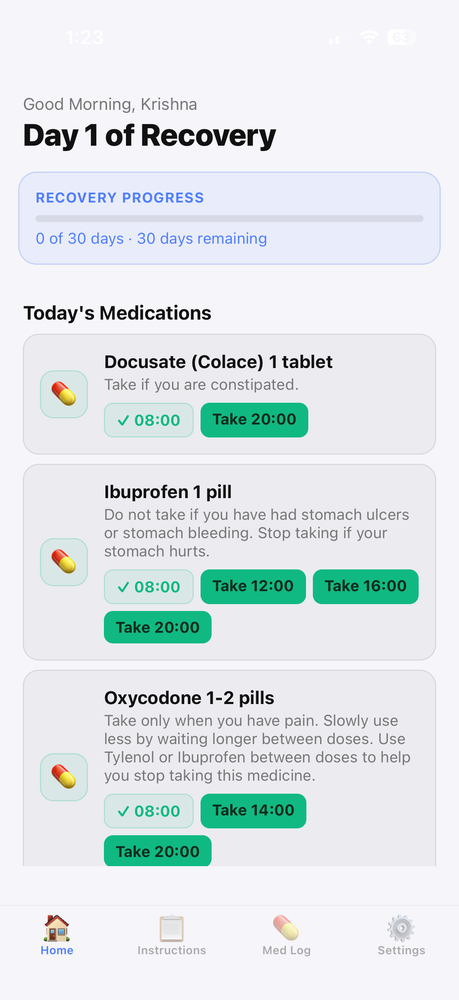
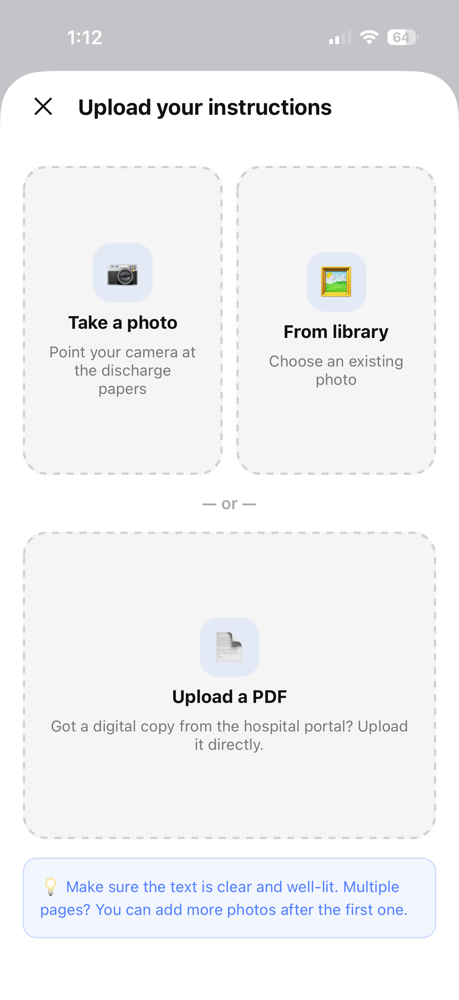
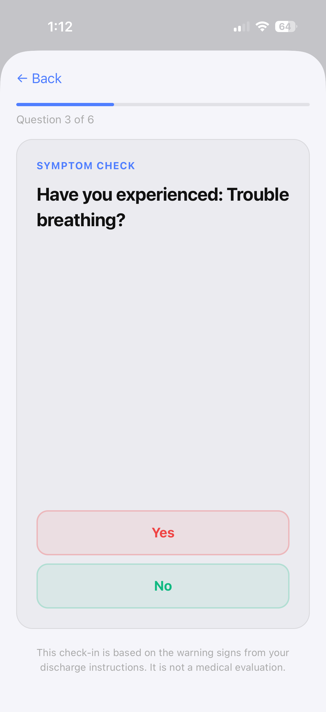
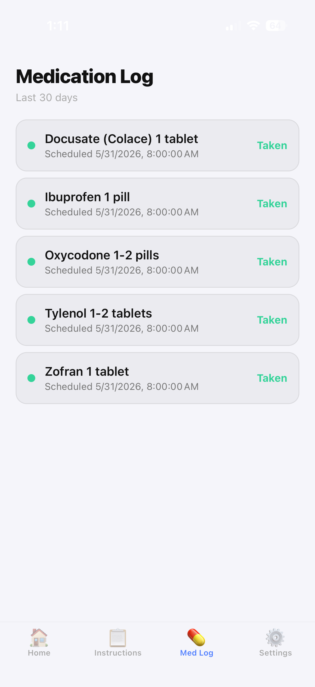
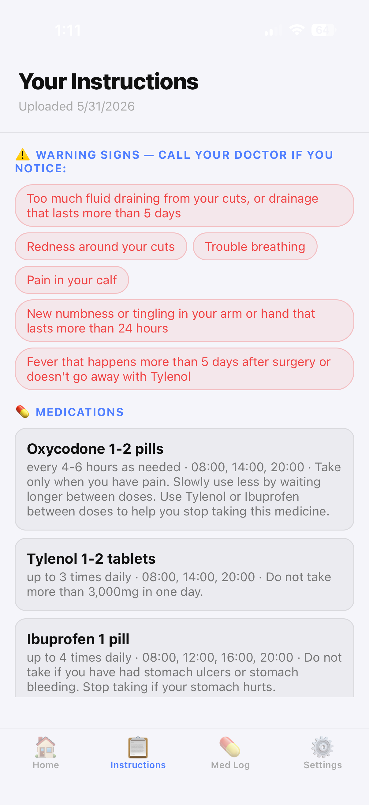

CuraPath uses AI to transform complex hospital discharge paperwork into clear daily tasks, medication reminders, and symptom check-ins — so patients can focus on healing.
No spam. We'll reach out when your access is ready.

Features
CuraPath takes the confusion out of going home from the hospital — turning dense medical instructions into a simple, personalized recovery plan.
How It Works
The App




For Healthcare Providers
CuraPath is designed to integrate with hospital discharge workflows, giving care teams confidence that patients are following their instructions after they leave.
Early Access
We're onboarding early users now. Sign up and we'll reach out when your access is ready.